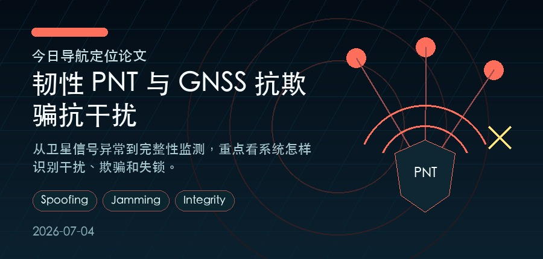

#1 · 2026-02-13 · eess.SP
GNSS Jamming Detection with Automatic Gain Control (AGC) and Carrier-to-Noise Ratio Density (CNO) Observables from a COTS receiver
Syed Ali Kazim, Anas Darwich, Juliette Marais
质量信号：质量分 0.0；venue 7th SmartRacon scientific seminar, Oct 2025, Stuttgart, Germany
01 · 2026-02-13 · eess.SP
作者：Syed Ali Kazim, Anas Darwich, Juliette Marais
关键词
gnss、jamming、agc
质量信号
质量分 0.0；venue 7th SmartRacon scientific seminar, Oct 2025, Stuttgart, Germany
为什么值得读
这篇论文同时覆盖 韧性 PNT 与 GNSS 抗欺骗抗干扰，并在标题/摘要中出现 gnss、jamming、agc 等信号；质量侧还有 质量分 0.0；venue 7th SmartRacon scientific seminar, Oct 2025, Stuttgart, Germany。它适合用来观察该方向近期如何处理鲁棒性、异常检测或融合估计问题。
工程启发
可借鉴其异常定义和误报抑制思路，把 GNSS 可信度作为状态估计输入的一部分，而不是孤立阈值。
摘要要点
从题名与摘要看，论文主要关注 GNSS 欺骗/干扰场景下的异常识别与完整性监测；技术线索包括 gnss、jamming、agc。阅读全文时建议重点看 可观测量设计、误报控制、攻击与非攻击故障的区分方式，再判断是否适合迁移到自己的工程链路。
具体实验结论建议回到原文核对后再引用。